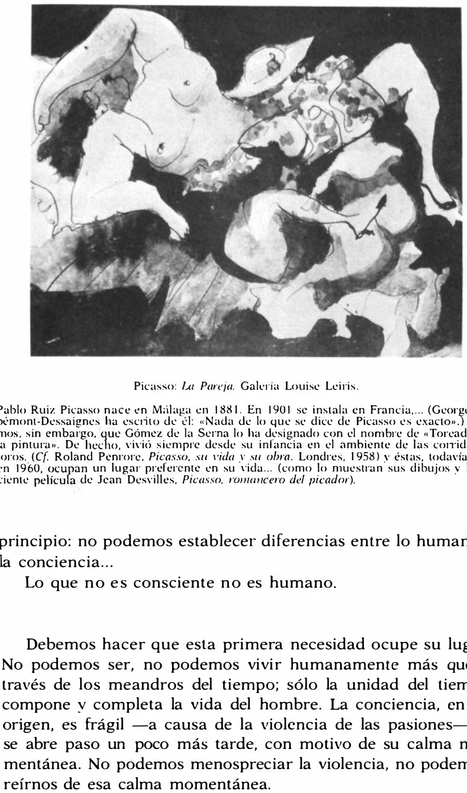

Lágrimas de Eros · Obra 88 de 121
La pareja
Pablo Picasso

Figuras entrelazadas a la tinta y la aguada. En 1961 la obra estaba en la Galerie Louise Leiris. Bataille no da fecha ni la comenta; la lámina acompaña el principio de su conclusión.
Lo que hace que destaque
Figuras entrelazadas a la tinta y la aguada. En 1961 la obra estaba en la Galerie Louise Leiris. Bataille no da fecha ni la comenta; la lámina acompaña el principio de su conclusión.
Contexto histórico
Sin identificar: el título es muy genérico, no hay fecha y no aparece en catálogos en línea.
Autoría y procedencia
Pablo Ruiz Picasso (1881-1973), pintor y escultor español, cofundador del cubismo y figura cumbre del arte contemporáneo universal.
En los libros
Las lágrimas de Eros, de Georges Bataille · Lámina de la p. 164
Ficha pendiente de contrastar con fuentes académicas.